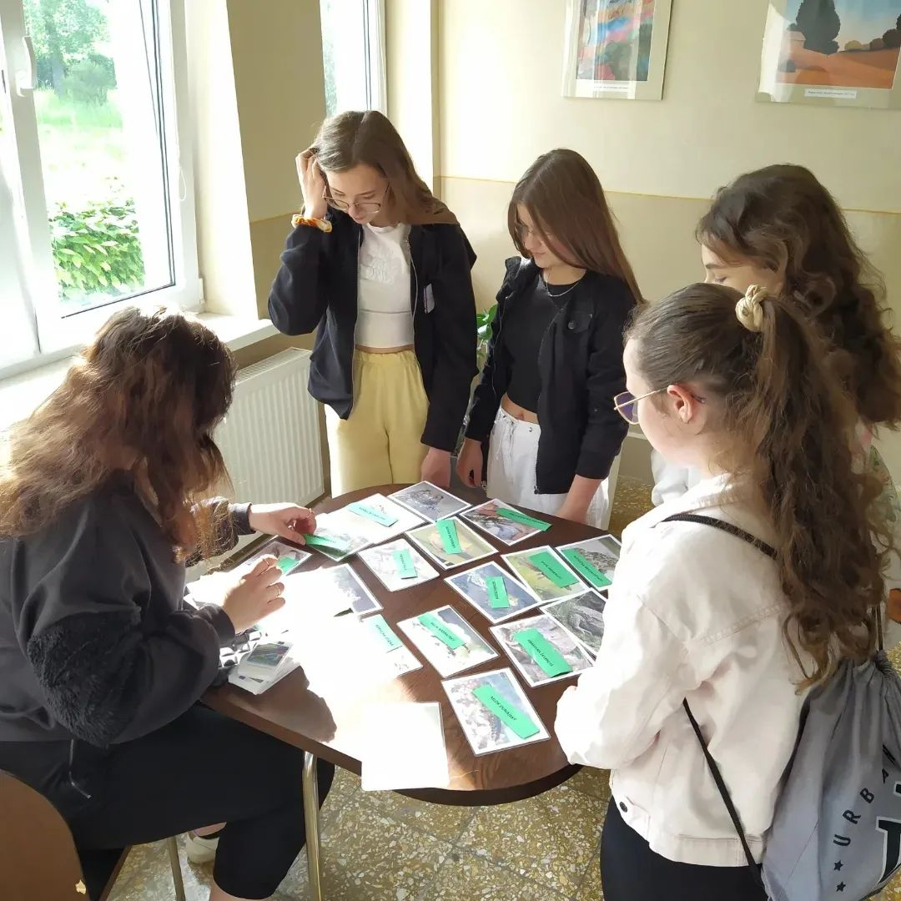
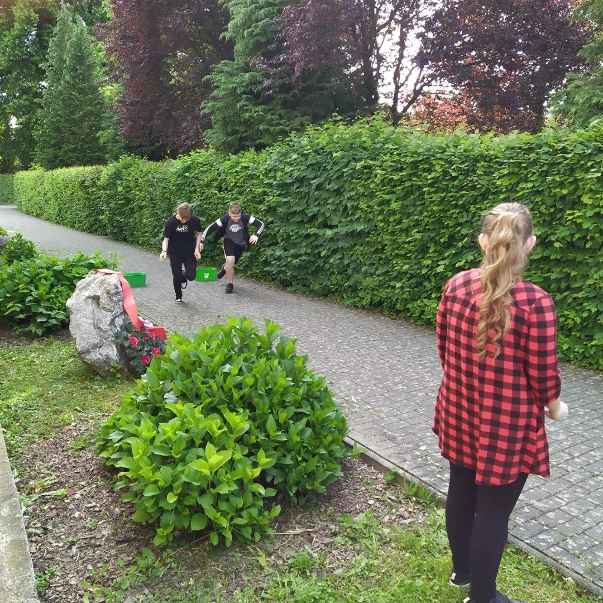
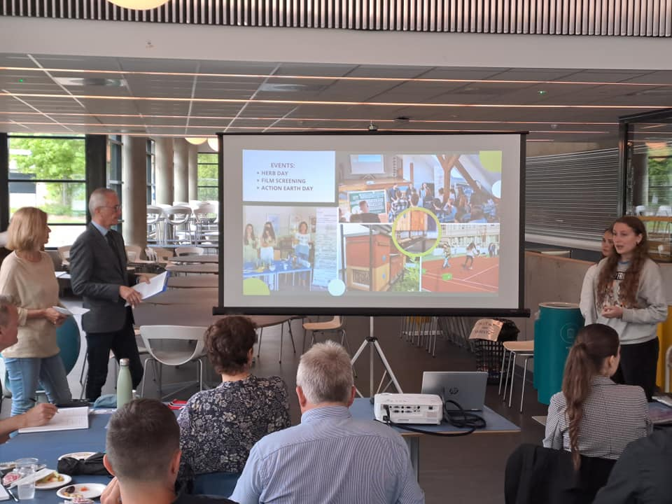
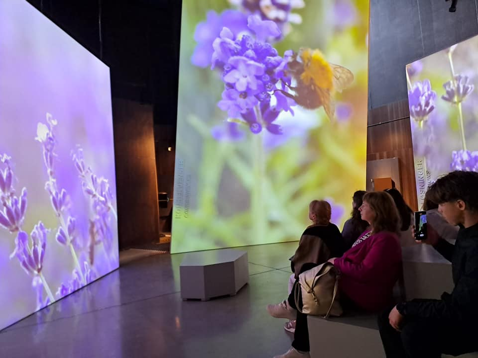
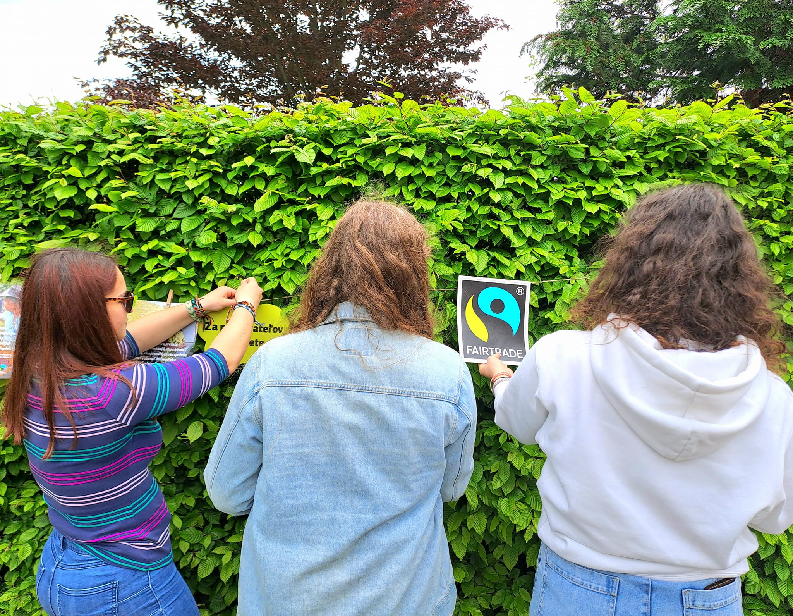
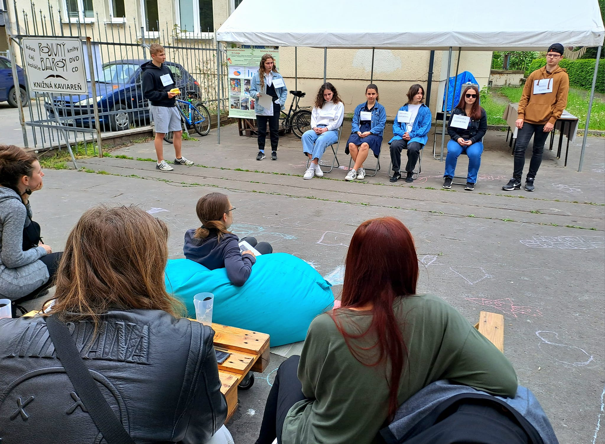

Zelená a Modrá škola
Vážení návštevníci! V tejto časti stránky nájdete všetky podstatné informácie o projekte Zelená a Modrá škola.
Environmentálny akčný plán školy: Gymnázium Púchov TU
Často kladené otázky na tému: Ako separovať, od Mladých reportérov
Dnešný akčný deň pre žiakov tried príma, sekunda a tercia. Tento deň prebiehal formou rovesníckeho vzdelávania, ktoré si pripravilo naše Kolégium Zelenej školy. Ďakujeme.
 V Púchove, dňa 29. 5. 2023
Dnes sme v Ski High School v Oslo, Nórsko (mimoriadne inšpiratívne miesto) spolu s tímami z ďalších piatich slovenských škôl prezentovali naše klimatické projekty. Navštívili sme aj Klimahuset, skleníky a prírodovedné múzeá v Botanickej záhrade. A ochutnali sme aj sušený hmyz.
 V Osle, dňa 23. 5. 2023
Z dnešného Férového pikniku v parku. Prítomní si okrem ochutnávky FairTrade výrobkov mohli užiť program púchovských gymnazistov na tému FairTrade, pozrieť sériu dokumentárnych filmov o FairTrade v príjemnej atmosfére kaviarne Podivný barón, zacvičiť si jogu s Maťom na streche našej budúcej malej telocvične a odbehnúť necelých 7km cestičkami popri Váhu. Veľká vďaka Petre Pobežalovej za poskytnutie priestorov, ústretovosť a srdečnosť. Tešíme sa na ďalšiu spoluprácu.
 V Púchove, dňa 13. 5. 2023